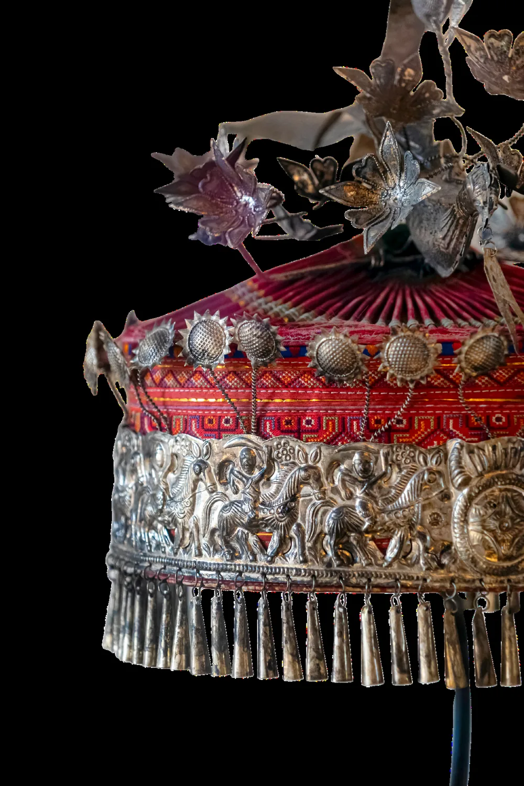
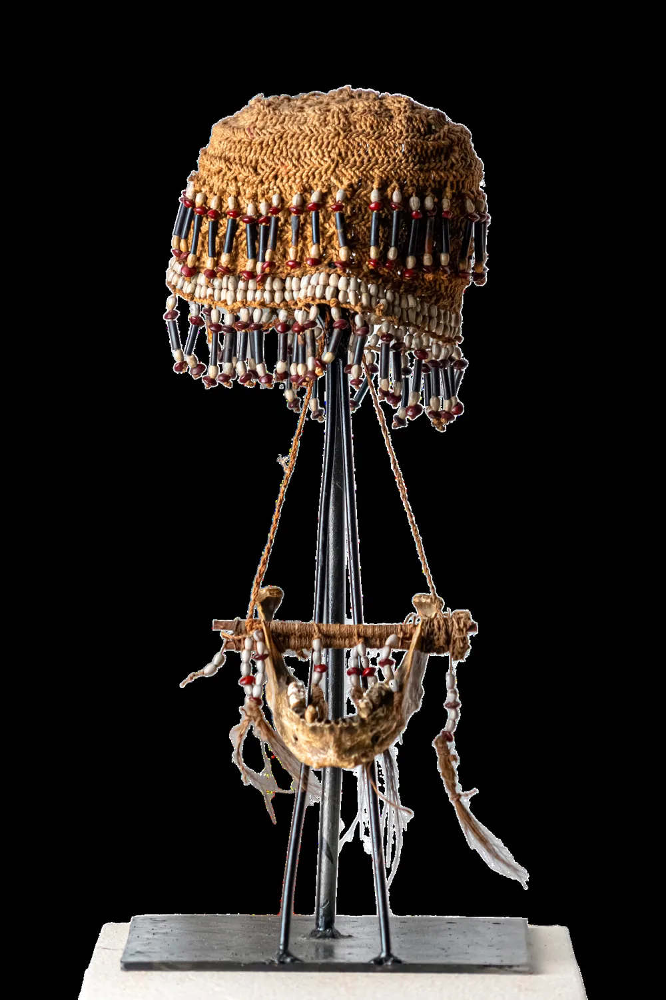
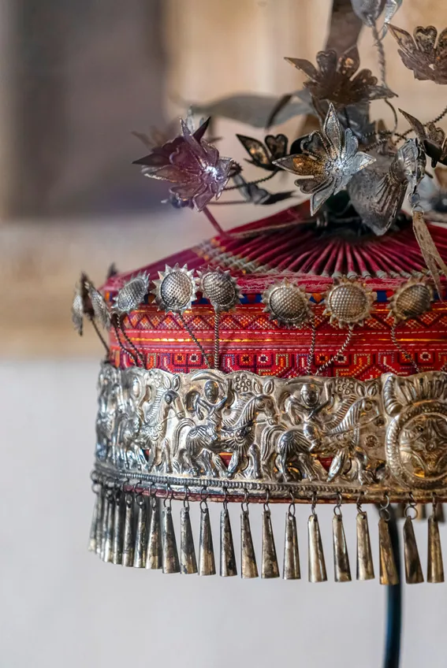
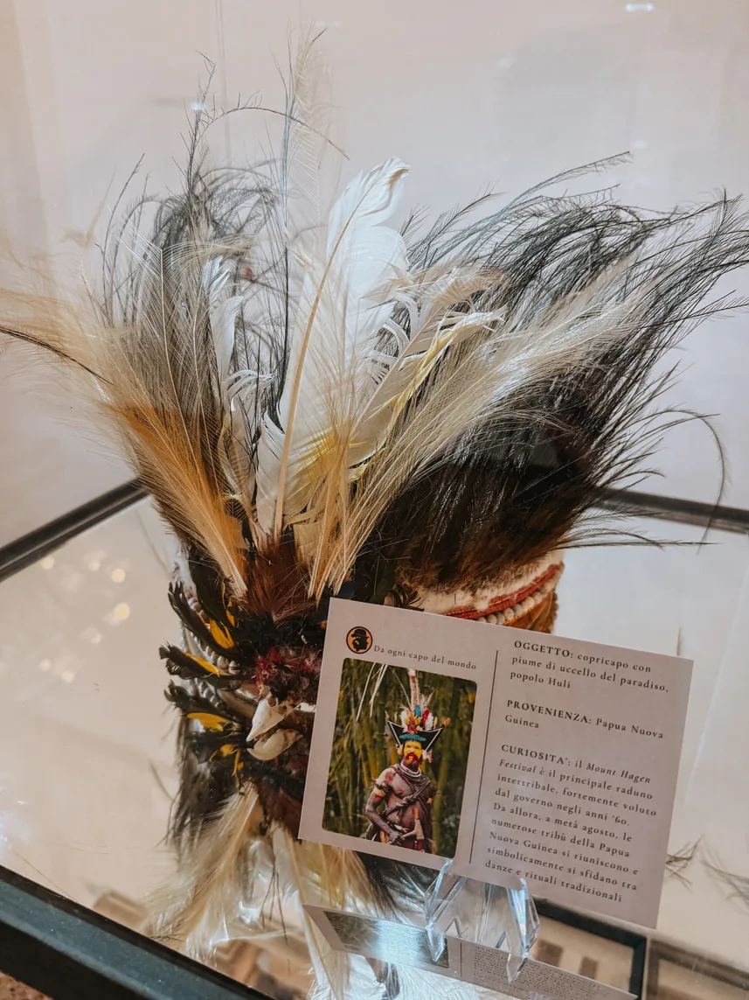
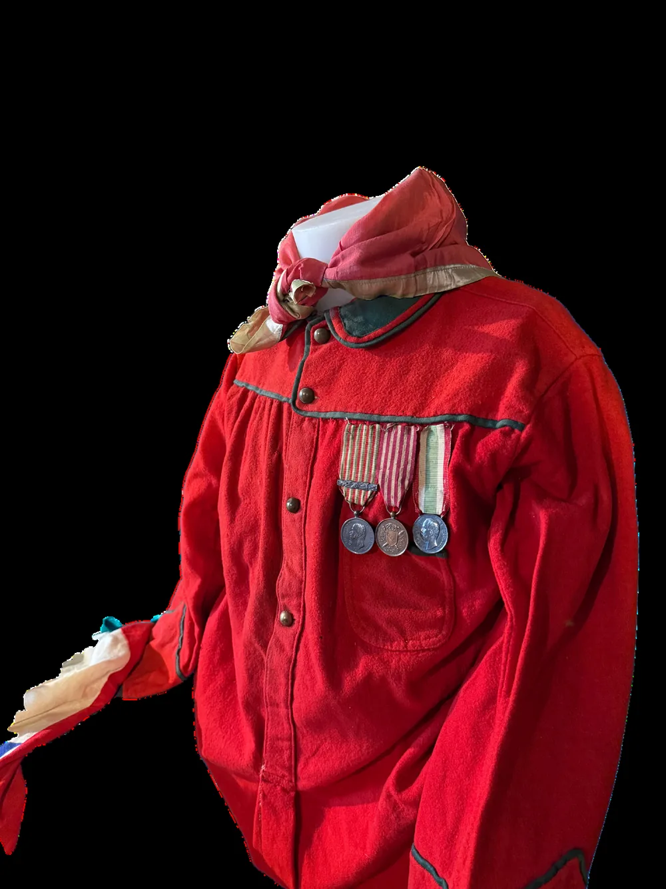
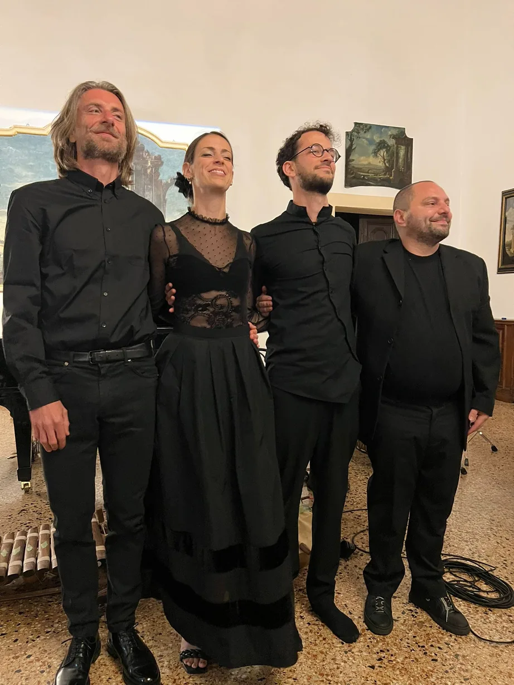
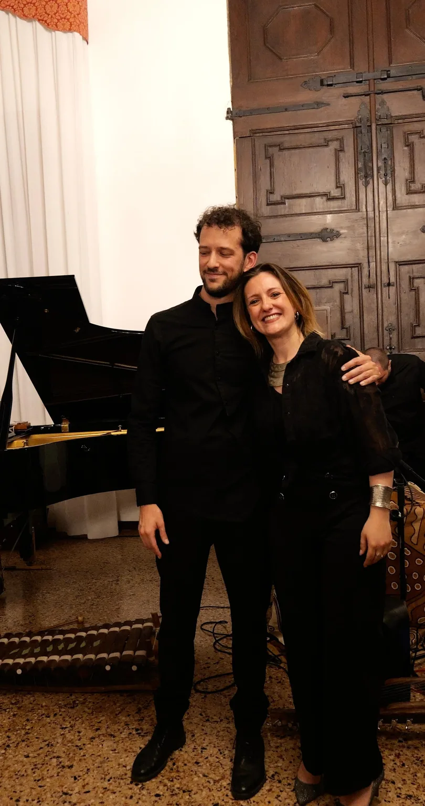
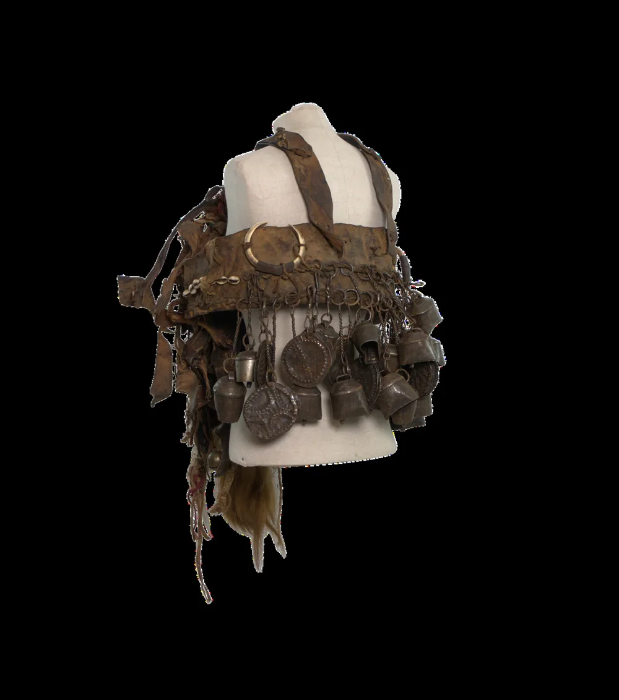

Osservare · ascoltare · riflettere
È possibile viaggiare restando fermi? Noi crediamo di sì.
Il progetto unisce arti diverse per raccontare l'umanità attraverso copricapi e costumi da tutto il mondo: oggetti che narrano la propria vita grazie a racconti originali, suoni, musica e movimento.
La collezione privata Da ogni capo del mondo, insieme agli artisti di IANUA, diventa il punto di partenza per un viaggio sensoriale tra culture, storie e tradizioni. Ogni pezzo esposto suggerisce emozioni, vissuti e identità, portando lo spettatore a riflettere e immaginare.
Un'esperienza immersiva e personale, dove ogni oggetto racconta una storia e ogni storia lascia un'impronta.




La collezione Da ogni capo del mondo.
Da ogni capo del mondo è una collezione privata di copricapi, costumi tribali ed etnici, vestiti d'epoca e accessori provenienti da ogni continente. Frutto di oltre trent'anni di passione, ricerca e studio, conta oggi più di 200 pezzi di rilevanza storica, culturale e antropologica.
Il nome gioca sul doppio significato della parola capo: la testa, su cui poggia il copricapo, fulcro della collezione, e il luogo, a indicare le diverse origini geografiche dei pezzi. Un titolo che unisce corpo e mondo in un'unica visione culturale.
Dare vita a eventi immersivi, impattanti e profondamente originali, pensati su misura attorno a copricapi e abiti da diverse parti del mondo. Ogni creazione è un invito all'ascolto, alla scoperta, all'incontro.
Immergersi in culture lontane è un modo potente per ritrovare ciò che ci rende umani: riconoscere le differenze, comprenderle, e lasciarsi sorprendere dalle somiglianze profonde che ci uniscono. Musica, racconti inediti e danza si intrecciano in un linguaggio universale.
L'evento può accompagnare una mostra temporanea della collezione, con visite guidate della curatrice e del collezionista, adattabile a teatri e spazi espositivi.
«La narrazione, fatta di voce, corpo e suono, è un fuoco eterno attorno a cui l'umanità si raduna, oggi come da sempre.»



Serata del 31 maggio 2025, Palazzo Malmignati, Lendinara (RO).